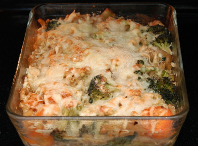

| Zutaten für 2 Portionen: | |
| 150g | Soja Vollkorn Hörnli |
| 200 g | Rüebli |
| 200 g | Broccoli |
| 1/2 | Zwiebel |
| 1/2 Zehe | Knoblauch |
| 1/2 KL | Olivenöl |
| 1 dl | Gemüsebouillon |
| 1 | Ei |
| 1/2 dl | Milch |
| 1/2 Becher = 90g | Sauer-Halbrahm |
| Pfeffer | |
| Kräutersalz | |
| 25 g | Appenzeller-Käse |
Zubereitungszeit: 60 Minuten
Hörnli in kochendem Salzwasser al dente kochen und abgiessen.
Die Rüebli schälen und in feine Scheiben schneiden.
Den Broccoli in Röschen brechen.
Zwiebel fein hacken.
In einer Pfanne die Zwiebel mit dem durchgepressten Knoblauch in Olivenöl andünsten.
Rüebli und Broccoli beifügen und mitdünsten.
Gemüsebouillon dazugiessen, aufkochen und 5-10 Minuten köcheln lassen.
Gratinform mit Olivenöl ausstreichen.
Ofen auf 200°C vorheizen.
Die gekochten Hörnli und Gemüse abwechslungsweise in die Gratinform schichten.
Den Guss durch verrühren des Eies, der Milch und des Halbrahms zubereiten. Mit Salz und Pfeffer würzen.
Guss über den Gratin geben und mit Reibkäse bestreuen.
20-30 Minuten auf der untersten Rille des Ofen gratinieren.
eBalance Rezeptsammlung.
1 Portion = 489 kcal (531g), 19% Protein = 23g, 53% Kohlenhydrate = 64g, 27% Fett = 15g
Ganz OK, der Gratin. RE 19.1.2013
@LINKBACK_TAG@ @WAKELOCK@